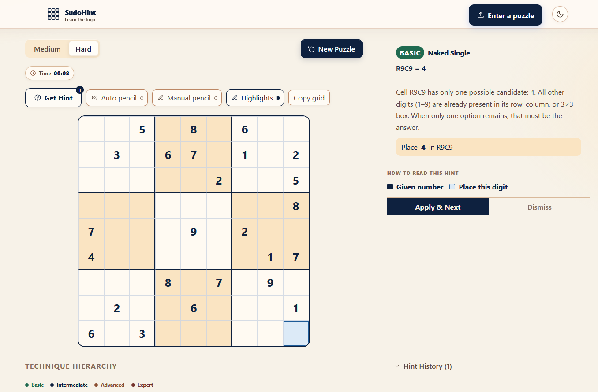
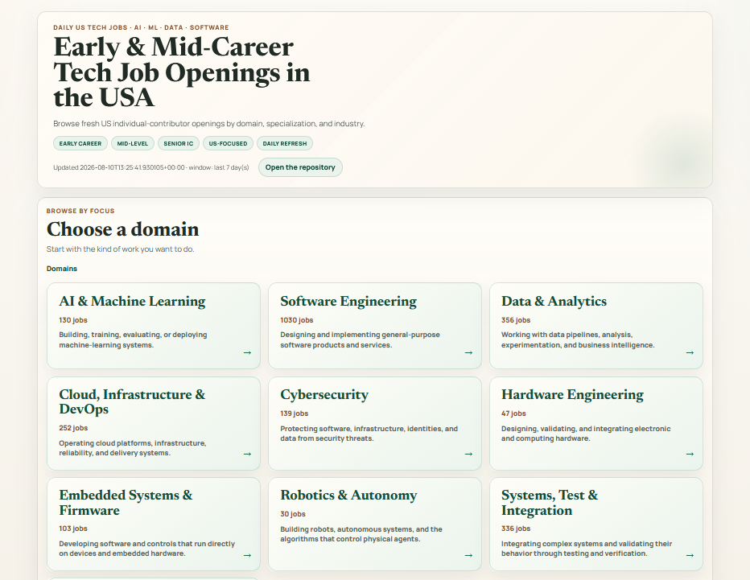
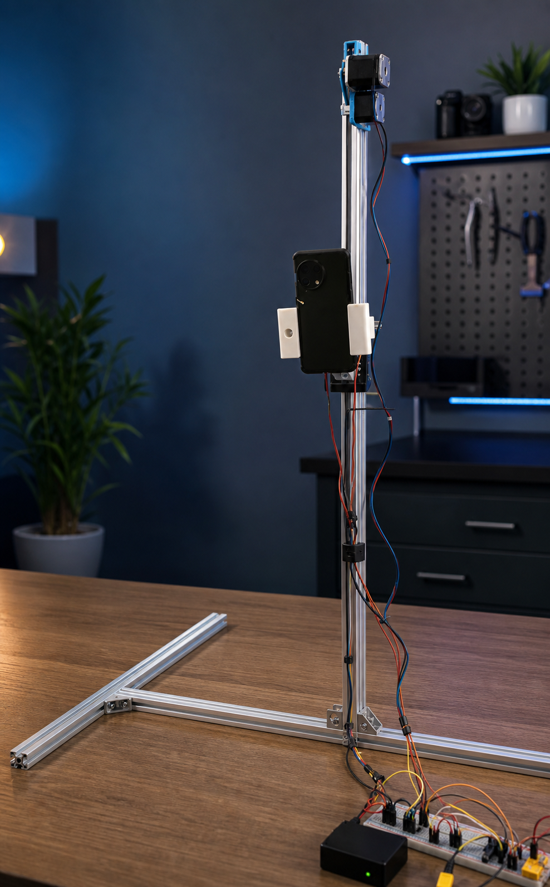
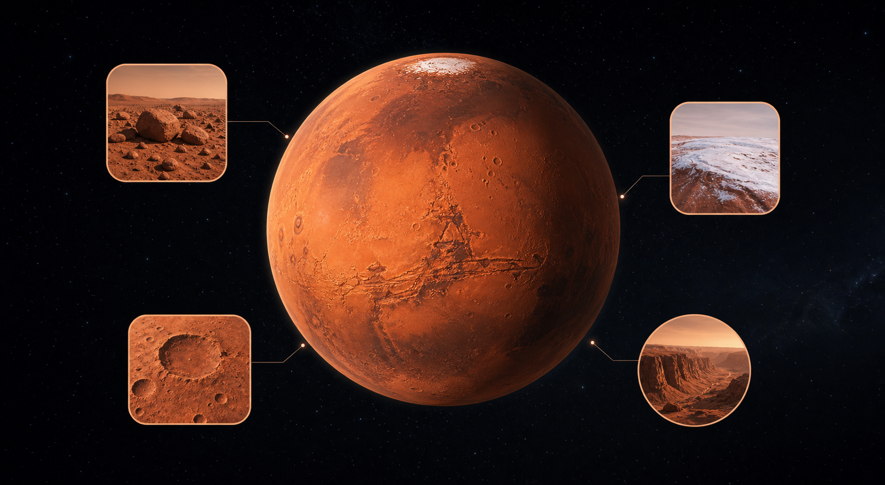
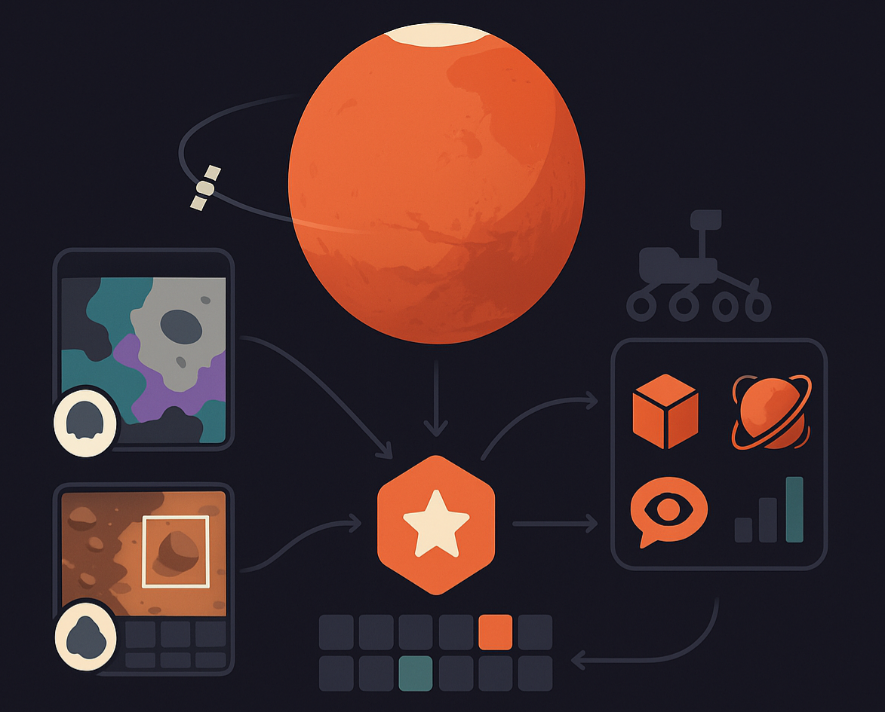
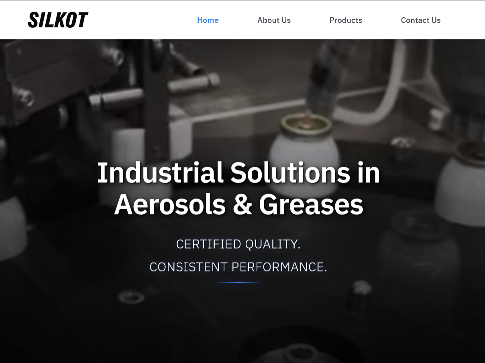
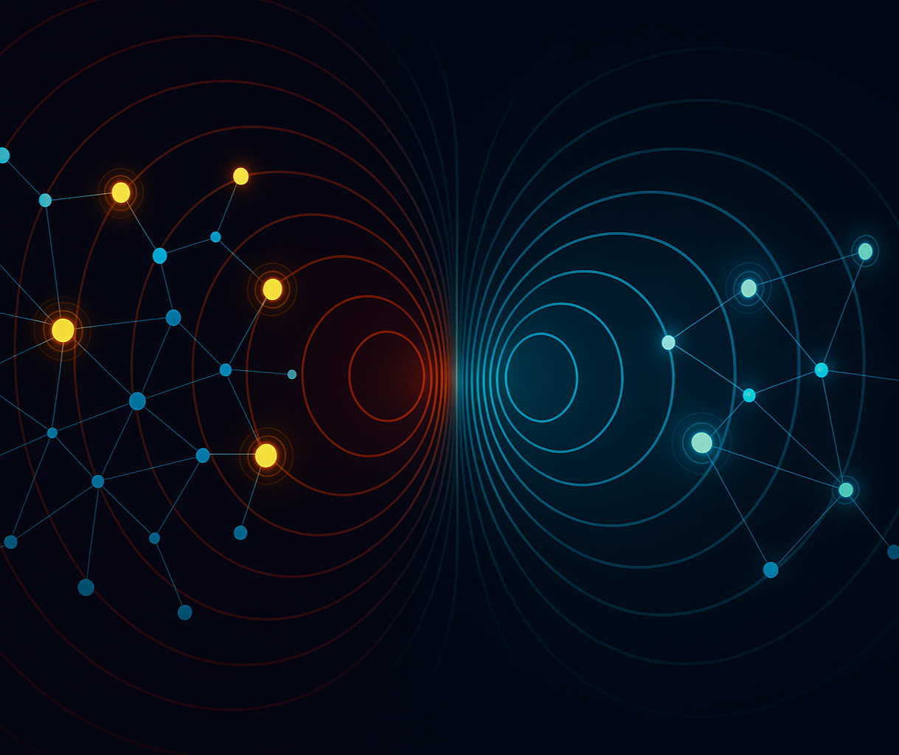
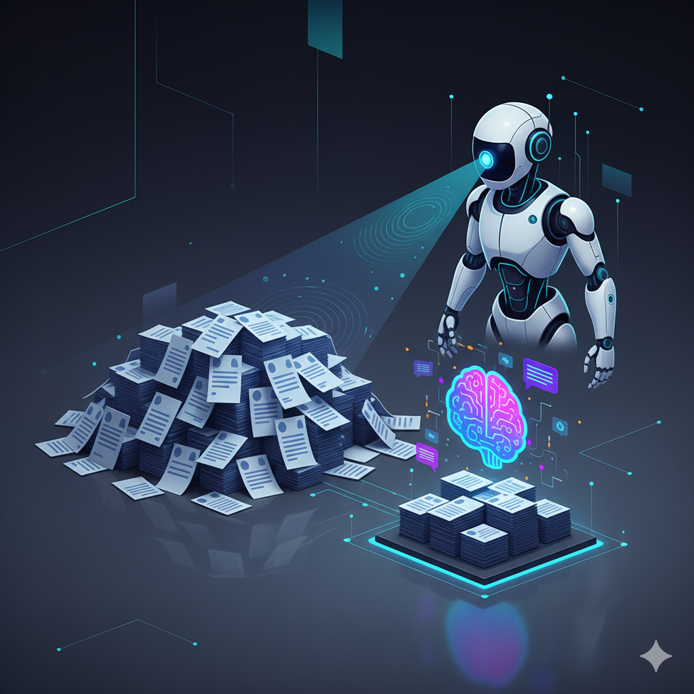

Completed my M.S. in Computer Science at ASU
Graduated with a 4.0 GPA after earning top-5% marks in all 9 courses.
I'm Irish Mehta
A Machine Learning Engineer
I’m a machine learning engineer and applied scientist who works from the first experiment to the final product.
Over the last 6 years, I’ve shipped production models for supply-chain and consumer products, then extended that foundation through research in computer vision, remote sensing, NLP, and generative AI. I enjoy the space between modeling and engineering: making a system accurate, scalable, observable, and useful to the person on the other side of it.
I recently completed my M.S. in Computer Science at Arizona State University, where I worked across Mars remote-sensing research, analytical systems, and efficient uncertainty estimation. Whether I’m running experiments on an HPC cluster or deploying a browser-only AI workflow, I care about clear assumptions, measurable outcomes, and tools that leave people better able to solve the next problem.
I have a soft spot for automation. I enjoy finding repetitive, frustrating parts of a process and turning them into tools that quietly give people time back—whether that means an ML service, a browser-based workflow, or a small script that removes a daily annoyance.
I'm a developer with three years of industry experience in building Machine Learning models. I have a solid background in end-to-end development, with a focus on building generalizable, scalable and efficient solutions.
I take pride in my ability to innovate and think out of the box. I am an expert user of Python and I am familiar with a wide range of tools and frameworks to solve any problem at hand. For me, tools are mediums to put creative throughts into actions. I am a strong advocate of open source and I feel that sharing knowledge is the best way to contribute to the community.
I recently completed my Master's in Computer Science at Arizona State University, where my goal was to upskill myself in all the subfields of AI. This included Classical ML, Generative AI, Natural Language Processing, Computer Vision, and Robotics. Parallel to academics, I was working as a Data Scientist and Researcher at different laboratories to apply learned theory to real-world problems. I am now looking for new opportunities to apply my skills and knowledge to solve challenging problems in the industry. I am open to roles in Machine Learning, Applied Science, Data Science, AI Research, and Software Development. Please feel free to reach out to me if you have any opportunities or if you just want to connect!
From production models to research systems, I build practical machine-learning solutions and measure what changes after they ship.
Showcasing some of my favorite work and personal projects.

A client-side Sudoku learning app that manages 81-cell game state in real time and supports browser-only image import with grid detection, perspective correction, cell segmentation, and OCR review. It also includes validation, timers, responsive mobile UI, and auto- or manual-candidate modes without a backend.

A multi-ATS job intelligence platform that ingests postings across 8.6K+ companies and 7 ATS platforms, filters 3.2K+ relevant ML and data roles, and publishes a searchable dashboard for daily job discovery using LLM-based relevance scoring and structured metadata extraction.

AutoFrame is an autonomous photography assistant that captures overview images, proposes better camera poses with Gemini reasoning, and iterates with Android and ESP8266 hardware support to optimize portrait framing.

MOMO is a multi-sensor foundation model for Mars remote sensing that merges representations from HiRISE, CTX, and THEMIS and supports downstream tasks across a wide range of Martian orbital resolutions.

Mars-Bench brings 20 standardized datasets for classification, segmentation, and detection of Martian features like craters, cones, boulders, and frost, aiming to make evaluation consistent and to catalyze Mars‑specific foundation models.
An adaptive learning system driven by a Multi-Armed Bandit controller to optimize question difficulty in real-time. The architecture uses a Streamlit frontend, a Groq API-based question generator, and JSON for persistent progress saving.

DishCovery is a food discovery app that analyzes restaurant menus and enables natural language query-based filtering of dishes and restaurants.

Designed and developed a responsive website for Silkot Silicones, a leading manufacturer of silicone products. The website features a clean, modern design with a focus on usability and SEO.

A vulnerability-based strategic counter-narrative system that analyzes social network data to generate targeted counter-narratives based on user vulnerability scores.
Earnings Call RAG Bot is a Retrieval-Augmented Generation system designed for analyzing and querying financial documents (Currently supports earnings call transcripts)

AI-powered resume ranking system that intelligently matches candidates to job requirements.
Best‑practice prompts and tutorials for large language models.
From-Scratch implementations of classic machine‑learning and deep learning algorithms.
NLP‑powered bot that auto‑sorts Google Drive files into logical folders.
Hybrid recommender merging content clues, ratings, and composite ranking.
Regression models to optimize composite manufacturing parameters.
End-to-end AI products, multimodal systems, and intelligent interfaces.
Models, benchmarks, and learning systems built around real technical problems.
Analytics and predictive systems that turn data into useful decisions.
A few recent milestones from my work across applied machine learning, research, and AI engineering.
Graduated with a 4.0 GPA after earning top-5% marks in all 9 courses.
A software-assisted hardware system for automated photography.
A multisensor foundation model for Mars remote sensing.
Received the Best Poster Award at the NeurIPS ML for Physical Sciences Workshop.
Submitted a CVPR 2026 paper under the guidance of Dr. Hannah Kerner.
Built DishCovery, a food discovery app, at Sunhacks 2025.
Received acceptance for a NeurIPS paper in the Datasets and Benchmarks track.
Completed a summer internship at ASU’s ACME Lab focused on efficient uncertainty estimation in deep learning.
Submitted a NeurIPS 2025 paper in the Datasets and Benchmarks track.
Completed the Spring 2025 semester with a 4.22 GPA and top-5% marks in two courses.
Started working at Decision Theater at ASU.
Started volunteering at the Kerner Lab at ASU.
I’m open to machine-learning, applied AI, and research-engineering opportunities. If you’re building something interesting—or have a process that should be automated—send me a note.
ihmehta@asu.eduUsually quickest by email. I’ll get back to you as soon as I can.